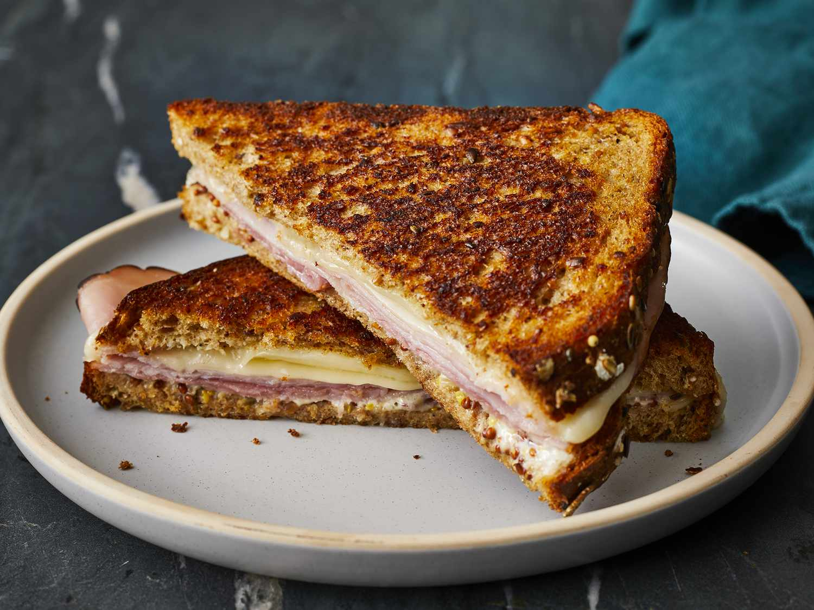

Back Home
Ham and Cheese Sandwich

Description
This ham and cheese sandwich is great on a cool night with a cup of tomato soup. I add spinach, arugula, tomatoes, roasted peppers, chopped olives, artichokes, or a spoonful of salsa to the sandwich, depending on my mood and what's in the fridge.
Ingredients
- 2 Slies of bread
- butter
- Swiss cheese
- Deli ham
- Mayonnaise
- Mustard
Steps
- Gather all ingredients.
- Preheat a skillet over medium-high heat.
- Spread one side fo each slice of bread with butter.
- Place on slice butter-side down onto hot skillet. Top with Swiss cheese and ham.
- Spread the unbuttered side of second slice of bread with mayo and mustard. Place it butter-side up on sandwich.
- Cook in hot skillet unitl golden brown and cheese is melted. About 3 minutes per side.